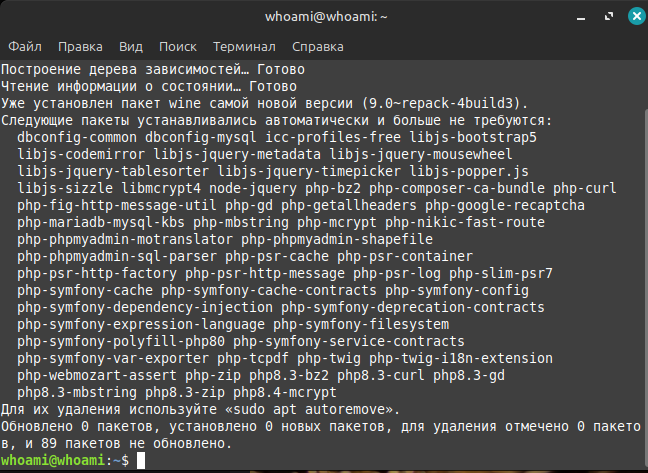
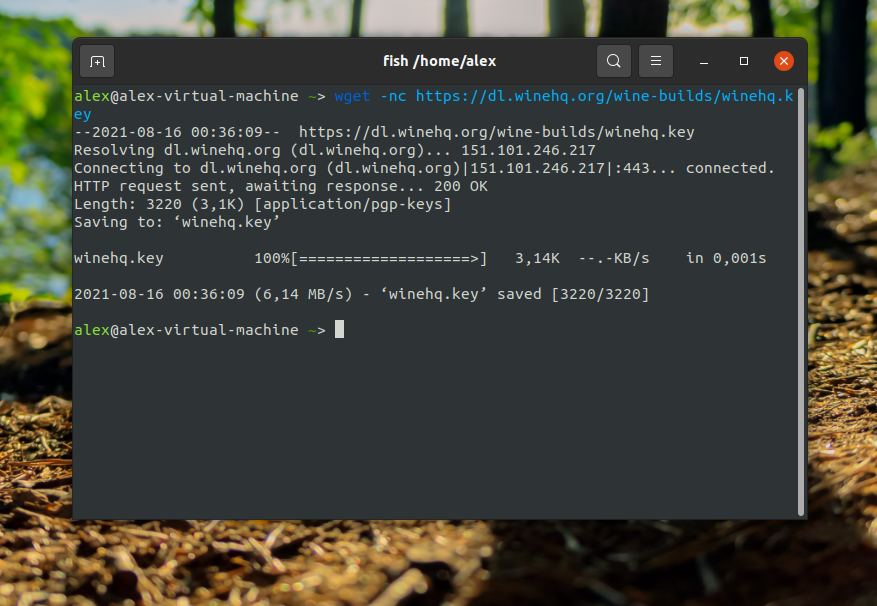

👋Привет, гость!
Linux Universe
Linux Universe — ваш портал в мир свободного программного обеспечения!
👋Привет, гость!
Linux Universe — ваш портал в мир свободного программного обеспечения!
Сегодня мы попытаемся установить инструмент Wine, для запуска Windows програм и не только. Wine позволяется взаимодействовать с реестром и имеет поддежку Net Framework
sudo apt-get intall -y wine
Результат:
Проверяем версию языка:
wine --version
Всё отлично работает! Мне вывелось версия языка wine-9.0 (Ubuntu 9.0~repack-4build3), это означает, что Wine успешно установлен!
Первый вариант может у вас не сработал, но мы можем установить Wine через пакеты, делается это легко.
С начало необходимо для 64 битных систем добавить поддержку архитектуры i386:
sudo dpkg --add-architecture i386 Далее добавляем официальный ключ для репозотория wine:
wget -nc https://dl.winehq.org/wine-builds/winehq.key
wget -nc https://dl.winehq.org/wine-builds/winehq.key
Результат:
Мы успешно установили Wine и теперь вы можете запускать любой exe файл.
Могут возникнуть проблемы с Wine и их решать не так трудно, интернет в помощь!
Спасибо за ваш лайк!
Мы сожалеем, что вам не понравилось. Пожалуйста, опишите проблему: